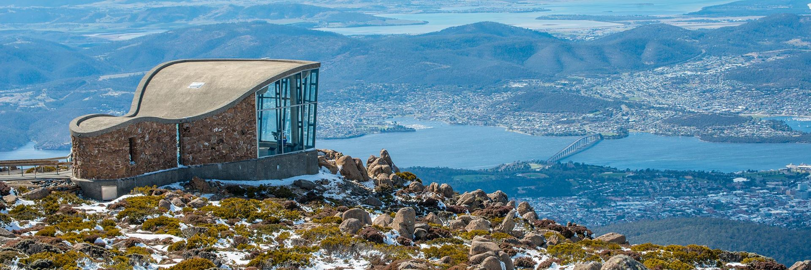
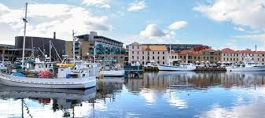
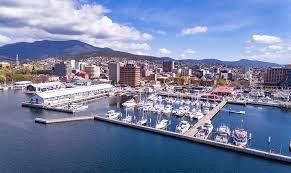
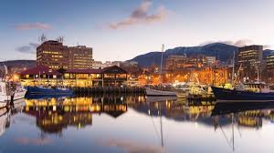
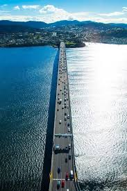

Hobart is the capital and most populous city of the Australian island state of Tasmania. With a population of approximately 240,342 (over 45% of Tasmania's population), it is the least populated Australian state capital city, and second smallest if territories are taken into account (after Darwin, Northern Territory).The city is located in the state's south-east on the estuary of the River Derwent, making it the most southern of Australia's capital cities. Its skyline is dominated by the 1,271-metre (4,170 ft) Mount Wellington,and its harbour forms the second-deepest natural port in the world,with much of the city's waterfront consisting of reclaimed land.The metropolitan area is often referred to as Greater Hobart, to differentiate it from the City of Hobart, one of the five local government areas that cover the city. Founded in 1804 as a British penal colony,Hobart is Australia's second oldest capital city after Sydney, New South Wales. Prior to British settlement, the Hobart area had been occupied for possibly as long as 35,000 years,by the semi-nomadic Mouheneener tribe, a sub-group of the Nuennone, or South-East tribe.The descendants of these Aboriginal Tasmanians often refer to themselves as 'Palawa'. Since its foundation, the city has expanded from the mouth of Sullivans Cove in a generally north-south direction along both banks of the River Derwent, from 22 km inland from the estuary at Storm Bay to the point where the river reverts to fresh water at Bridgewater.Penal transportation ended in the 1850s, after which the city experienced periods of growth and decline. The early 20th century saw an economic boom on the back of mining, agriculture and other primary industries, and the loss of men who served in the world wars was counteracted by an influx of immigration.Despite the rise in migration from Asia and other non-English speaking regions, Hobart's population remains predominantly ethnically Anglo-Celtic, and has the highest percentage of Australian-born residents among Australia's capital cities. Today, Hobart is the financial and administrative hub of Tasmania, serving as the home port for both Australian and French Antarctic operations and acting as a tourist destination, with over 1.192 million visitors in 2011–12. Well-known drawcards include its convict-era architecture, Salamanca Market and the Museum of Old and New Art (MONA), the Southern Hemisphere's largest private museum.Hobart is internationally famous among the yachting community as the finish of the Sydney to Hobart Yacht Race which starts in Sydney on Boxing Day (the day after Christmas Day). The arrival of the yachts is celebrated as part of the Hobart Summer Festival, a food and wine festival beginning just after Christmas and ending in mid-January. The Taste of Tasmania is a major part of the festival, where locals and visitors can taste fine local and international food and wine..
    